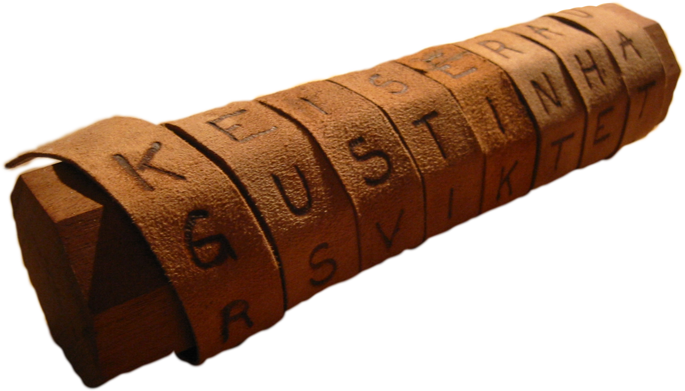
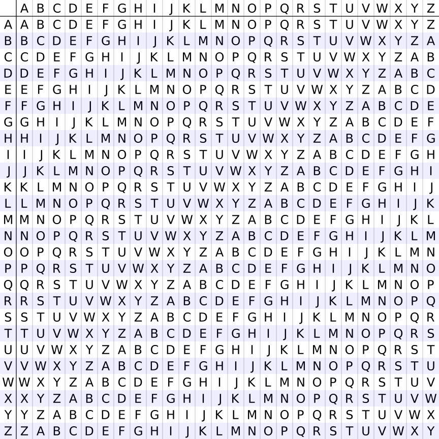

관찰 포인트
- 글자 자체는 바뀌지 않는데 읽을 수 없게 됩니다.
- 막대 둘레, 즉 열 수가 곧 키 역할을 합니다.
- 표를 채우는 순서와 읽는 순서가 다르면 암호가 됩니다.

실제 스키테일은 막대에 띠를 감은 뒤 문자를 적고, 다시 펼쳤을 때 순서가 흐트러지는 구조였습니다.
미션: 열 수를 바꿔 보면서 같은 문장이 얼마나 다르게 보이는지 확인해 보세요.
1. 전치 암호
아래에서 암호화를 누르면 문장을 표에 채운 뒤 세로로 읽어 암호문을 만듭니다. 복호화를 누르면 거꾸로 표를 복원한 뒤 가로로 읽어 원문을 되찾습니다.

실제 스키테일은 막대에 띠를 감은 뒤 문자를 적고, 다시 펼쳤을 때 순서가 흐트러지는 구조였습니다.
2. 치환과 해독
입력을 바꾸면 휴리스틱 추정, 수학적 최적해, 상위 후보가 다시 계산됩니다. 슬라이더를 움직이면 같은 문장이 몇 칸 이동하는지 즉시 보입니다.
많이 나온 글자를 보고 영어에서 자주 쓰이는 글자를 추정합니다.
가능한 모든 이동값을 시험한 뒤 빈도 분포와 가장 비슷한 해를 고릅니다.
3. 다중 치환
시저 암호는 모든 글자를 같은 만큼 이동시켰지만, 비제네르 암호는 글자마다 다른 이동값을 씁니다. 그래서 같은 평문 글자라도 놓인 위치가 다르면 다른 암호문으로 바뀝니다.
예를 들어 키워드가 TURING이면 문장 아래에 TURINGTURING...처럼 반복해서 깔립니다.
A는 0칸, B는 1칸, C는 2칸처럼 생각합니다. 즉 키 글자가 이동량 역할을 합니다.
첫 글자는 T만큼, 둘째 글자는 U만큼, 셋째 글자는 R만큼 밀립니다. 그래서 한 문장 안에서도 규칙이 계속 바뀝니다.

비제네르 암호는 이런 표에서 평문 행과 키 열을 만나게 해 각 칸마다 다른 치환을 만드는 방식으로 이해할 수 있습니다.
아래 시각화에서 입력 글자, 반복 키, 출력 글자가 한 칸씩 어떻게 연결되는지 보세요.
4. 로터 기계
애니그마는 키보드, 플러그보드, 세 개의 로터, 반사판, 램프판으로 이루어진 전기-기계식 암호기였습니다. 많은 온라인 애니그마 시뮬레이터처럼 이 페이지도 로터 순서, 시작 위치, 플러그보드 쌍을 바꾸어 실험할 수 있게 만들었습니다. 핵심은 "배선이 다른 부품을 어떤 순서로 꽂았는가"와 "지금 부품이 어느 각도에 놓여 있는가"입니다.
로터 번호는 단순한 번호표가 아니라, 내부 배선이 서로 다른 원판 종류를 뜻합니다. I, II, III, IV, V는 모양이 다른 배선판 5개라고 생각하면 됩니다.
각 로터 위의 "창"은 지금 맨 위에 보이는 글자입니다. AAA로 시작했다는 말은 세 로터가 모두 A 위치에서 출발한다는 뜻입니다.
AB CD라고 쓰면 A와 B를 서로 바꾸고, C와 D를 서로 바꿉니다. 이 교환은 로터에 들어가기 전과 나온 뒤에 모두 영향을 줍니다.
입력 글자는 플러그보드와 세 로터의 배선을 지나며 계속 다른 글자로 변합니다. 같은 배선이라도 로터 각도가 달라지면 연결 결과가 달라집니다.
키를 한 번 누를 때마다 오른쪽 로터가 먼저 한 칸 돌아갑니다. 그래서 바로 직전에 입력한 글자와 지금 입력한 글자가 같은 A라도, 로터가 다른 각도에 있어 다른 출력이 나옵니다.
실습은 오른쪽 시뮬레이터에서 진행하고, 로터의 회전과 전류 경로는 팝업에서 크게 관찰하세요.
많은 온라인 애니그마 시뮬레이터처럼 이 수업용 시뮬레이터도 로터 순서, 시작 위치(창), 플러그보드 쌍을 바꾸며 실험할 수 있습니다. 먼저 A 한 글자만 넣고, 이어서 A를 두 번 넣어 결과가 왜 달라지는지 관찰해 보세요.
서로 다른 내부 배선을 가진 로터 종류입니다. 로터 순서를 바꾸면 같은 입력도 다른 길로 지나갑니다.
각 로터가 지금 어느 글자를 위에 보이게 두고 시작하는지 나타냅니다. 시작 위치를 바꾸면 같은 로터라도 다른 출력이 나옵니다.
AB는 A와 B를 서로 바꾸라는 뜻입니다. 빈칸은 아무 글자도 미리 바꾸지 않는다는 뜻입니다.
AB를 넣고 다시 비교합니다.
5. 기계적 탐색
봄브는 "암호문을 한 번에 풀어 주는 마법 상자"가 아니었습니다. 먼저 사람이 원문 어딘가에 있었을 법한 단어를 짐작하고, 봄브는 그 가설과 맞지 않는 로터 설정들을 엄청난 속도로 탈락시켰습니다. 즉, 봄브의 핵심은 정답 찍기가 아니라 빠른 모순 검사였습니다.
예를 들어 암호문 어딘가에 WORLD가 있었을 것 같다고 짐작합니다. 이 짐작이 봄브 탐색의 출발점입니다.
크립을 암호문 밑에 한 칸씩 옮겨 놓으며 비교합니다. offset 3은 세 칸 옮겨 겹쳐 보았다는 뜻입니다.
겹쳐 놓았을 때 같은 칸에서 W와 W처럼 같은 글자가 만나면 그 정렬은 즉시 모순입니다. 봄브는 이런 모순을 빠르게 찾아 버렸습니다.
초록 후보는 맞을 수도 있고 틀릴 수도 있습니다. 단지 지금 단계까지는 모순이 발견되지 않았다는 뜻입니다.
실제 봄브는 훨씬 복잡한 회로와 메뉴를 사용했습니다. 여기서는 학생이 이해하기 쉬운 "겹쳐 보기와 모순 검사" 부분을 중심으로 다룹니다.
크립 정렬 실험은 오른쪽에서 하고, 실제 드럼이 어떻게 회전하며 후보를 걸러 내는지는 팝업에서 크게 확인하세요.
예시에서는 "원문 어딘가에 WORLD가 있었을 것"이라고 가정합니다. 실행하면 WORLD를 암호문 밑에 한 칸씩 옮겨 놓으며, 어디서 즉시 모순이 생기는지 볼 수 있습니다.
6. 규칙 기계
튜링 머신은 실제 애니그마를 돌린 기계라기보다, 계산이라는 생각을 가장 단순하게 보여 주는 모형입니다. 긴 테이프를 읽고, 현재 상태를 기억하고, 규칙표에 따라 쓰고 움직입니다. 여기서는 애니그마 해독에서 중요했던 "같은 글자 금지" 생각을 아주 작은 계산 절차로 체험합니다.
튜링 머신은 종이띠 같은 긴 테이프를 갖고 있다고 생각하면 됩니다. 한 칸에 한 기호씩 적혀 있고, 기계는 한 번에 한 칸만 봅니다.
헤드는 테이프 위를 왼쪽이나 오른쪽으로 움직이며 현재 기호를 읽습니다. 화면에서 강조된 칸이 바로 헤드가 보고 있는 위치입니다.
기계는 "지금 A를 기억 중인지", "비교 단계인지" 같은 정보를 상태 이름으로 기억합니다. 이 작은 기억이 다음 행동을 결정합니다.
튜링 머신은 똑똑하게 생각하지 않습니다. 오직 규칙표만 보고 쓰기, 이동, 다음 상태를 고릅니다.
A#A처럼 같은 글자가 같은 위치에 만나면 모순이라는 규칙을, 튜링 머신이 어떻게 절차적으로 검사하는지 체험합니다.
단계 실행은 오른쪽에서 하고, 헤드 이동과 상태 변화는 팝업에서 크게 보며 따라가세요.
입력 A#A는 "암호문 글자 A"와 "가정한 평문 글자 A"가 같은 위치에서 만났다는 뜻입니다. 먼저 A#A를 돌려 모순이 생기는지 보고, 다음에는 A#B로 바꿔 비교해 보세요.
7. 컴퓨터의 기본 구조
이제 암호를 계산하는 기계를 조금 더 현대적인 컴퓨터에 가깝게 봅니다. 입력이 들어오고, CPU가 메모리에서 명령을 읽고, 레지스터에 잠깐 저장하며 계산하고, 마지막에 출력으로 내보내는 흐름을 따라가 보세요.
키보드로 입력한 값이나 파일에서 읽어 온 값처럼, 프로그램이 바깥에서 받아들이는 정보입니다.
명령과 데이터를 저장해 두는 공간입니다. CPU는 여기서 필요한 것을 읽어 옵니다.
CPU 안의 아주 작은 저장 공간입니다. 여기서는 PC, IR, ACC가 어떤 역할을 하는지 볼 수 있습니다.
프로그램이 계산 결과를 바깥으로 내보내는 통로입니다. 화면에 숫자가 찍히는 것도 그 예입니다.
CPU는 메모리에서 명령을 읽고, 레지스터에 잠깐 저장한 뒤, 계산 결과를 다시 메모리나 출력으로 보냅니다.
입력 글자가 플러그보드, 세 로터, 반사판을 지나며 왜 다른 글자로 바뀌는지 단계별로 관찰합니다.
키가 눌리면 전류가 플러그보드와 로터를 지나 반사판을 거쳐 다시 돌아옵니다.
키보드에서 들어온 글자
서로 바꾸기로 약속한 글자가 있으면 먼저 교환
오른쪽, 가운데, 왼쪽 로터를 지나며 계속 변함
반사판이 방향을 바꾸고 다시 로터를 거쳐 돌아옴
마지막에 켜지는 램프 글자
크립을 한 칸씩 옮겨 겹쳐 보며 어떤 정렬이 왜 바로 탈락하는지, 어떤 후보가 아직 살아남는지 확인합니다.
회전 드럼이 가능한 설정을 빠르게 훑고, 모순이 보이면 즉시 탈락시킵니다.
원문 어딘가에 이 단어가 있었을 것이라고 추정
크립을 몇 칸 옮겨 암호문과 겹치는지 확인
같은 글자가 같은 칸에서 만나면 즉시 탈락
빨간색은 탈락, 초록색은 아직 탈락하지 않음
테이프, 헤드, 상태, 규칙표가 어떻게 함께 작동하는지 크게 보며 계산이 일어나는 방식을 단계별로 따라갑니다.
헤드는 한 칸을 읽고, 규칙표를 보고, 쓰고, 왼쪽이나 오른쪽으로 움직입니다.
헤드가 현재 칸의 기호를 읽습니다.
현재 상태와 읽은 기호에 맞는 규칙 한 줄을 고릅니다.
필요하면 기호를 바꾸고, 왼쪽이나 오른쪽으로 움직입니다.
다음 상태로 넘어가며 같은 과정을 반복합니다.